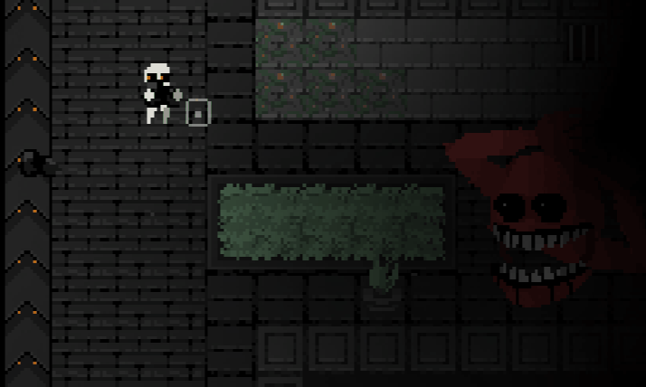

Cobb Can Move
Survive a pixel-art dungeon where Cobb hunts you with ever-changing rules — collect coal, power furnaces, activate breakers, and escape before the rules shift again.
▶ Play NowPlay Cobb Can Move Online

What is Cobb Can Move?
Cobb Can Move is a survival horror roguelike set inside a procedurally generated pixel-art dungeon. You explore dark corridors, carry coal to power furnaces, activate breakers to restore light, and survive — all while being hunted by Cobb, a terrifying monster whose abilities randomly change between every level.
One run Cobb may be blind and slow. The next, it can see, hear, smell, duplicate itself, or extend its reach across the room. Every run is different. Every rule change forces a new strategy. How long can you last?
Evolving Monster AI
Cobb gains new senses — sight, hearing, smell, duplication — randomly each level.
Procedural Dungeons
No two runs look alike. Maps, coal placement, and breaker locations are fully randomized.
Stealth & Resource
Manage visibility, sound, and coal supply while avoiding detection from Cobb.
Core Gameplay Features
Eight mechanics that make Cobb Can Move unique.
Randomized Rule System
Cobb's rules — sight, sound, reach, duplication — change every level, forcing fresh tactics.
Procedural Horror Maps
Dungeon layouts are generated fresh each run — no memorizing safe paths.
Coal & Furnace Objectives
Collect scattered coal, carry it to furnaces, keep the power running to survive.
Breaker Activation
Find and flip breakers to restore light and unlock escape routes under pressure.
Stealth & Awareness
Manage noise, light, and movement to avoid triggering Cobb's active senses.
Pixel Art Atmosphere
Retro pixel-art visuals with dynamic lighting create intense psychological tension.
Endless Survival Mode
Story levels plus an endless mode with ever-escalating rule combinations.
Fast Retry Loop
Instant restarts keep you experimenting — each death teaches something new.
How to Play Cobb Can Move
Survive the dungeon step by step.
-
1
Launch the Game
Click Play Now above — the game runs instantly in your browser, no download needed.
-
2
Read Cobb's Current Rules
Each level shows Cobb's active abilities. Know whether it can see, hear, or smell before you move.
-
3
Explore the Dungeon
Move carefully through dark corridors. Locate coal piles, furnaces, and breaker panels.
-
4
Collect and Carry Coal
Pick up coal and carry it to the furnace to keep the lights on. Being in darkness is dangerous.
-
5
Activate Breakers
Find and flip breaker switches to unlock doors and progress toward the exit.
-
6
Avoid Cobb
Use stealth, timing, and the environment to stay out of Cobb's detection range.
-
7
Escape the Level
Reach the exit before Cobb catches you. The next level brings new rules — stay adaptable.
-
8
Survive Endless Mode
After story levels, push into endless mode where multiple rules stack simultaneously.
Cobb Can Move Game Details
Quick reference for the Cobb Can Move experience.
| Category | Details |
|---|---|
| Release Date | 2025 |
| Genre | Survival Horror, Roguelike, Procedural Generation, Pixel Art, Indie |
| Game Mode | Single-player — Story levels + Endless Survival Mode |
| Core Objective | Collect coal, power furnaces, activate breakers, escape Cobb |
| Controls | Keyboard & optional gamepad; stealth, timing, resource management |
| Platform | Web Browser — no download required |
| Visual Style | Retro pixel-art with dynamic lighting & procedural dungeon layouts |
| Price | Free to play |
| Rating | ★★★★★ 5 / 5 |
Why Play Cobb Can Move?
Ten reasons players keep coming back.
Cobb evolves every level — no two runs play the same way.
Dark corridors, dynamic lighting, and an unpredictable hunter create real dread.
Every dungeon is freshly generated — no memorizing layouts.
Outsmart Cobb with patience and environmental awareness, not brute force.
Instant restarts keep you learning — every death reveals a better path.
Juggling coal, furnaces, and breakers adds strategic weight to every move.
Beautiful hand-crafted pixel art with atmospheric lighting effects.
Stacked randomized rules push skilled players to their absolute limit.
Runs in any browser — no download, no account, no cost.
Challenging but always fair — each rule change is learnable.
Frequently Asked Questions
Everything you need to know about Cobb Can Move.
Ready to Face Cobb?
Free, instant, no download — can you survive when the rules keep changing?
▶ Play Cobb Can Move Free
💬 Player Comments
What players are saying about Cobb Can Move.
The randomized rules are genius. Every run I think I know what to do and then Cobb suddenly gets hearing and I'm done. Absolutely addictive!
The pixel art lighting is stunning. Carrying coal through dark hallways while Cobb patrols nearby is genuinely terrifying. Best free browser horror game I've played.
I love roguelikes and this one nails the formula. The fact that Cobb can duplicate is the most terrifying thing I've experienced in a browser game. 10/10.
Played for 3 hours straight. The endless mode with stacked rules is brutal but so satisfying. Highly recommend for anyone who enjoys stealth horror games.
The procedural dungeon generation keeps every session fresh. No two runs ever feel the same. The coal mechanic adds a really unique layer of tension.
Leave a Comment